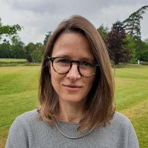
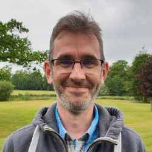
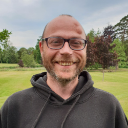
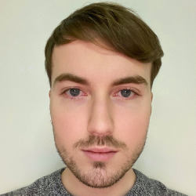
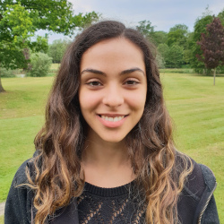

Team
Elisabeth Busch-Nentwich
Elisabeth is Senior Lecturer in Organismal Biology in the School of Biological and Behavioural Sciences, Queen Mary University of London. After studying Biochemistry at the Eberhard Karls University in Tübingen Elisabeth did her PhD at the Max Planck Institute for Developmental Biology. There she participated in one of the large-scale forward genetic screens in zebrafish. In 2003 Elisabeth joined Derek Stemple’s group at the Wellcome Sanger Institute to study a group of motility mutants from the Tübingen screen. In 2005 she became project leader in the Zebrafish Mutation Project where she developed high-throughput approaches to tie morphological and molecular phenotypes to the mutations identified by exome sequencing.
Ian Sealy
Ian is a bioinformatician in the Busch Lab and has a PhD in molecular biology from the University of Bristol.
He worked for seven years as a full stack web developer at the Institute for Learning & Research Technology, specialising in producing accessible and usable web applications with open source tools. He also worked for three years as Head of Technology at The Local, a European news organisation which, at the time he left, received over 3 million visitors and 25 million page views per month. Ian also worked for 20 years as a sessional lecturer at Birkbeck, University of London, where he taught a part-time Postgraduate Certificate in Web Design and Development.
Ian joined the Wellcome Sanger Institute in 2004 to work on a number of projects related to the sequencing, assembly, annotation and mutagenesis of the zebrafish genome, including ZF-MODELS and Ensembl. In 2010 he joined the Zebrafish Mutation Project and since then has worked on a range of projects, most of which are linked by their use of next-generation sequencing to analyse vertebrate gene expression.
Richard White
Richard is a bioinformatician in the Busch Lab and has a PhD in developmental biology from the University of London.
He then did a postdoc for five years at the University of California, Irvine in the lab of Tom Schilling, working on retinoic acid (RA) signalling in early anterior-posterior patterning. The project focused on how degradation of RA by CYP26 enzymes affects the dynamics and robustness of RA signalling and involved a collaboration to build a mathematical model of the RA gradient.
Richard joined Derek Stemple's lab at the Wellcome Sanger Institute in 2007 to work on a project to try and infer gene regulatory relationships from gene expression data coupled with gene perturbations. In 2011, he made the switch from wet lab to bioinformatics and joined the Zebrafish Mutation Project to do variant calling from exome sequencing in order to identify mutants. Since then, Richard has worked on software to automate CRISPR/Cas9 experiments (guide RNA design and amplicon screening for variant identification) and large scale RNA-seq studies on early zebrafish and mouse development.
Pavol Kramár
Pavol completed his BSc (Hons) in Molecular Biology at Royal Holloway, University of London. He conducted his final year undergraduate research project under the supervision of Prof. Robin Williams, focusing on identifying molecular targets of the anti-cancer phytochemical sulforaphane, employing Dictyostelium discoideum as a model system. Pavol remained in the Williams Lab for an MRes in Molecular Cell Biology. The aim of his MRes project was to study the role of medium-chain fatty acids in PKB-dependent autophagy regulation in Dictyostelium.
Pavol acquired industrial research experience working for SporeGen as a Research Assistant, where he collaborated on a project exploring the application of genetically modified Bacillus subtilis spores in developing a SARS-CoV-2 mucosal vaccine, using SporeVax® technology. Additionally, he held the position of Senior Research Assistant at Orbit Discovery, where he performed high-throughput screening to identify novel therapeutic peptides, employing a DNA-barcoded library of ligands presented on microbeads.
Pavol joined the Busch Lab in January 2023 as a PhD student. In his doctoral research, Pavol investigates mechanisms of functional compensation between paralogous genes in zebrafish embryonic development.
Tian Qiu
Tian completed her BSc in Pharmacy at Soochow University. For her final year research, she focused on investigating the effect of mutant TP53 on the development and prognosis of non-small cell lung cancer, summarising several pathways related to TP53 loss of function. Tian then conducted her Masters research in the College of Pharmaceutical Sciences at Soochow University under the supervision of Prof. Weipeng Wang. The aim of her project was to study the synergistic effects of splicing factor SRSF3 and transporter SLCO4A1 inhibitors in colorectal cancer.
Tian participated in several contract research projects during her Masters, conducting preclinical pharmacokinetic studies of small molecules, including establishing a LC-MS/MS method and analysing ADME data after administration in mice using the Winnolin software suite. Additionally, she acquired industrial research experience working for TOT BIOPHARM as a physicochemical analyst, where she conducted instrumental analysis of biological samples of antibody drug conjugates.
Tian joined the Busch Lab as a PhD student in September 2023. She investigates the role of the chromatin modifier Kdm2aa in melanoma formation.
Recent Alumni
Munise Merteroglu
Munise was a research assistant in the Busch Lab. She graduated from the University of Cambridge with a BA in Natural Sciences and joined the group in 2019. She worked on several projects; most notably a forward genetic screen to identify genes underlying addiction-related behaviour. Under Elisabeth's supervision, she completed an MPhil in Medical Science at the University of Cambridge (2020/2021), investigating gene regulatory responses to developmental drug exposures.
In 2022, she received a Marie Skłodowska-Curie Actions PhD fellowship from the University of Padua. She is investigating transcriptomic changes during the transition of cellular states that enable cancer metastasis, with a view to identifying prognostic and therapeutic targets.